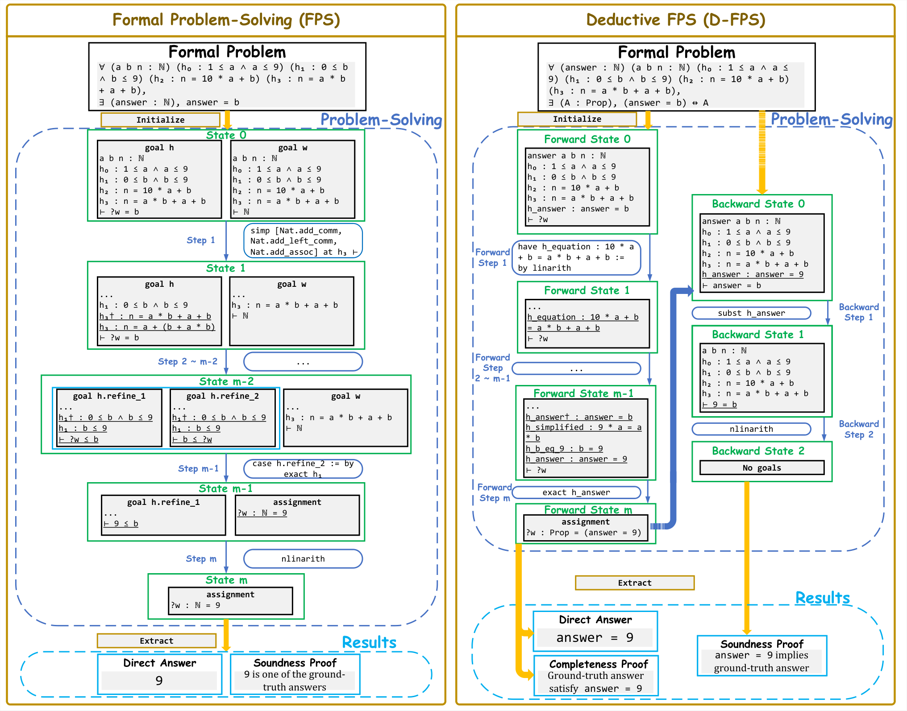

Implements formal problem-solving frameworks (FPS, D-FPS) and answer-checking (RPE) in Lean 4, with Lean benchmarks FormalMath500, MiniF2F-Solving, PutnamBench-Solving.
Abstract
As a seemingly self-explanatory task, problem-solving has been a significant component of science and engineering. However, a general yet concrete formulation of problem-solving itself is missing. With the recent development of AI-based problem-solving agents, the demand for process-level verifiability is rapidly increasing yet underexplored. To fill these gaps, we present a principled formulation of problem-solving as a deterministic Markov decision process; a novel framework, FPS (Formal Problem-Solving), which utilizes existing FTP (formal theorem proving) environments to perform process-verified problem-solving; and D-FPS (Deductive FPS), decoupling solving and answer verification for better human-alignment. The expressiveness, soundness and completeness of the frameworks are proven. We construct three benchmarks on problem-solving: FormalMath500, a formalization of a subset of the MATH500 benchmark; MiniF2F-Solving and PutnamBench-Solving, adaptations of FTP benchmarks MiniF2F and PutnamBench. For faithful, interpretable, and human-aligned evaluation, we propose RPE (Restricted Propositional Equivalence), a symbolic approach to determine the correctness of answers by formal verification. We evaluate four prevalent FTP models and two prompting methods as baselines, solving at most 23.77% of FormalMath500, 27.47% of MiniF2F-Solving, and 0.31% of PutnamBench-Solving.
Problem
Problem-solving (finding unknowns) lacks a rigorous formulation, and LLM-based solvers lack process-level verification. Formal theorem proving verifies proofs but only for known targets.
Approach
Problem-solving is formulated as a deterministic Markov decision process. In the FPS framework, the queried answer becomes a coupled metavariable in Lean 4 proof states, so solving proceeds by tactic application and the answer is extracted from metavariable assignments. D-FPS separates forward deductive solving from backward verification for find-all problems. RPE judges answer correctness by checking equivalence to the ground truth using restricted proof automation.

Figure 2: Demonstrations of FPS and D-FPS. FPS: After initialization, an agent iteratively executes solution steps to transform solution states until all goals are solved. A direct answer and its soundness proof can be extracted. D-FPS: The whole process is further decoupled into a forward-solving part and an optional backward-proving part. Forward-solving enforces deductive reasoning for better h
Results
Three benchmarks are built: FormalMath500, MiniF2F-Solving and PutnamBench-Solving. Across four FTP models and two prompting methods, the best results are 23.77% solved on FormalMath500, 27.47% on MiniF2F-Solving and 0.31% on PutnamBench-Solving.